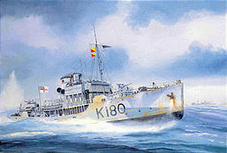

|
| John
Batchelor |
|
It
has been a privilege for BANNERLINE and several of our clients to have worked
with one of the world's most accomplished artists and technical illustrators,
John Batchelor of Wimborne, Dorset, England.
There are few libraries in the world that don't contain Batchelor art
within many published works. He has illustrated several prestigious
collections of military and war histories, and books on many other themes.
His clients have included the Smithsonian Institution, the Imperial War
Museum, Time-Life Books, Microsoft Corporation, Popular Mechanics Magazine
and the postal systems of more than 30 countries of the world. A particular
forte is cutaway illustrations, depicting both the exterior casing and
interior workings of ships, planes, cars and machinery.
John Batchelor's work for BANNERLINE over the years has included
commissions for:
| British Columbia Ferry Corporation |
| Collingwood School |
| Paul T. Clough |
| Imperial Parking Limited |
| Interpro Technical Services Ltd. |
|
| BANNERLINE
/ Batchelor Projects |
|
A few of the BANNERLINE/Batchelor projects are illustrated here:
|
|
INTERPRO's U.S. Navy Turbines
When Interpro began marketing mint-condition, never used, U.S. Navy turbines for
conventional industrial use, it was decided that it would be good to illustrate the ships for which General Electric designed and built the turbines, but to also illustrate the unique modern opportunity. Batchelor painted World War II cruisers USS Oregon City, USS Cleveland, the turbines themselves and a typical industrial scene.
Some of these images were used in the Flash intro Bannerline created
for the Interpro website.
|
|
|
|
 |
HMCS
Collingwood
One of Canada's most prestigious private schools was named
after a ship. HMCS Collingwood, once commanded by the father of this
school's founder, was Canada's first corvette of World War II, the tiny,
uncomfortable, generation of warships described by Nicholas Monsarrat in The
Cruel Sea as the true heroes of the Battle of Atlantic.
|
|
Collingwood School commissioned John Batchelor to
immortalize the vessel that was its namesake. |
Batchelor with Collingwood students
|
|
|
|
Sir
Francis Drake and The Golden Hind
John Batchelor was retained by the
British Columbia Ferry Corporation to paint cutaway illustrations of company
ships for the International Marine Transit Association 1996 annual
convention, which was held in Vancouver. After an agreement was reached on
the cutaways,
it was proposed that John might paint an original oil, which could be a
lasting memento of the event, reproduced as signed limited editions for all
delegates. The subject put forward by sponsors was to be historical
speculation, the increasingly documented supposition that the west coast of
Canada was first explored by Sir Francis Drake in 1577, two centuries earlier
than what is generally regarded as the first European
discovery. These
various works are presented here. The pencil sketch was completed by
Batchelor in 10 minutes, as he awaited a drive to a meeting at which the
project was discussed. He passed around the table what he described as his
"doodles".
Batchelor's research in all projects is meticulous. When he delivered the
finished oil of the Drake vessels at the entrance to B.C.'s Active Pass, he
added this amusing postscript: "The ships are accurate with the
exception of the ceremonial sails. Had Drake used them during this long
voyage, barely a trace of the red would still be visible. The Cross of St.
George was reserved for royalty and great occasions, not the stealthy prowls
for which Drake was famous."
|
Batchelor cutaway of a B.C. Ferry "fast
ferry" a $210 million three-ship project that went
way over budget ($450 million) with ships that failed to perform as expected, creating
one of the greatest political controversies in the province's history. |
|
|
|
Harley-Davidson Heritage Softail Classic
|
This motorcycle, owned
by Paul T. Clough of Vancouver, B.C., became the subject of a large oil
painting, commissioned as a gift to Clough in 1998. |
|
|
|
The 1929 Auburn Boat-Tail
Was one of four original oil paintings
commissioned by Paul T. Clough and Imperial Parking Limited during 1997 and
1998. The plan at the time was to create a gallery of classic automobiles,
with the large 36" x 26" originals at the core, but duplicated in
limited edition prints and posters for multiple corporate promotional
purposes.
This message accompanied the Auburn painting:
The small town of Auburn, Indiana (1998 pop. 10,000) is
one of the most important
But Frank and Morris Eckhart were the first to put
Auburn on the map, when they began manufacturing cars as early as 1900.
Their Auburn Boat-Tail Speedster, styled by Count Alexis Sakhnottsky,
emerged from a long line of high performance cars. The Boat-Tail offended
the sensibilities of the social elite, who denigrated both its
"vulgar" sweeping lines and reasonable selling price. Priced far
below rival sports car builders, this extrovert vehicle had a two-tone paint
job and an eight-cylinder engine. The Boat-Tail was entered in many time
trials around the United States, bettering many stock car records.
E.L. Cord, an auto mechanic born in Missouri, acquired
the Auburn Automobile Company in 1924 and led the creation of its most
distinguished vehicles, the Cord and the later editions of the Auburn. A
1935 Auburn 851 was driven by Marlene Dietrich in the movie Desiré.
|
Paul Clough (right) and Batchelor with three
of the four paintings at the framing shop |
Other paintings in this series:
| 1914 Stutz Bearcat Roadster |
| 1914 Model T Ford |
| 1936 Duesenberg SSJ |
|
|
|
The
Hector
This original John Batchelor oil on canvas depicts the perilous
voyage of the vessel that established the first permanent Scottish settlement
in Canada's Nova Scotia, at Pictou County in 1773. Most of the settlers were
from County Sutherland in northern Scotland. Of the 33 families and 25 single
men who sailed, 18 people died during the 11 week voyage. This painting is in
the private collection of Gary and Patricia Bannerman. |
|
top of page |
|
|
|